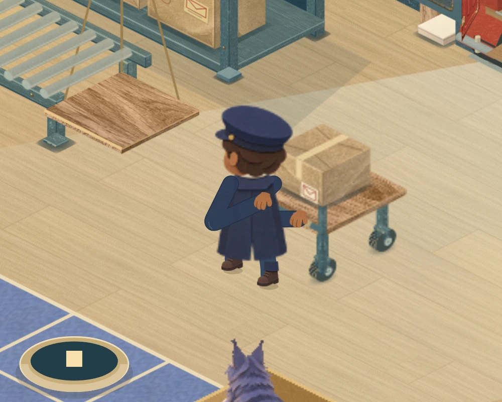
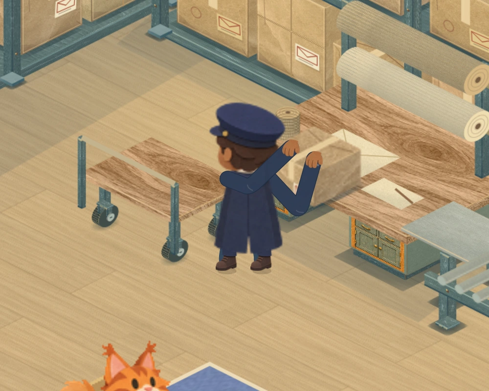
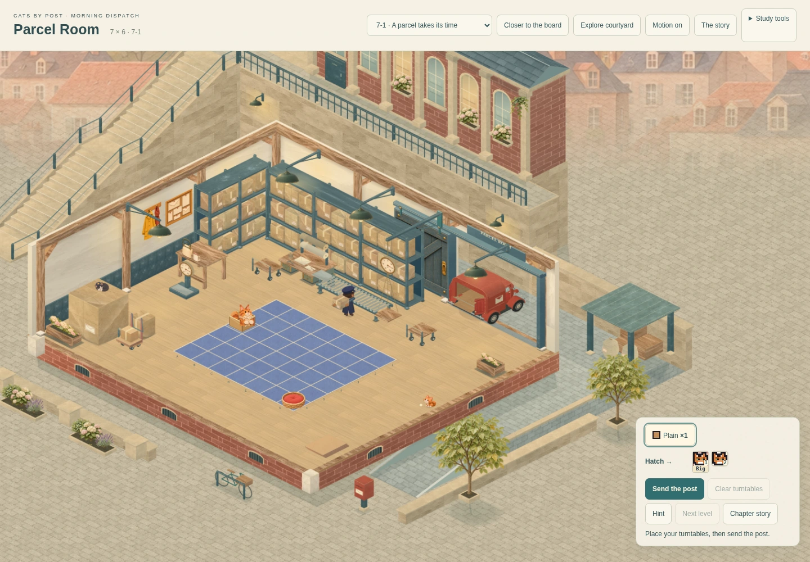
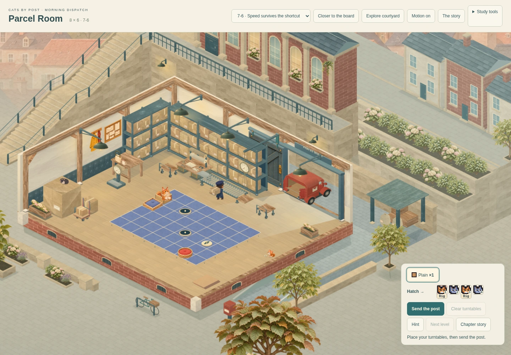
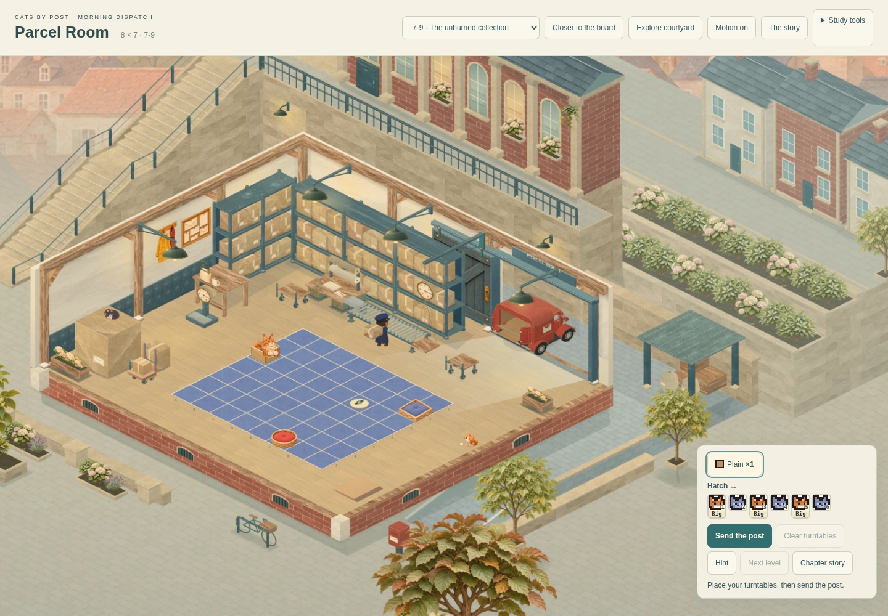
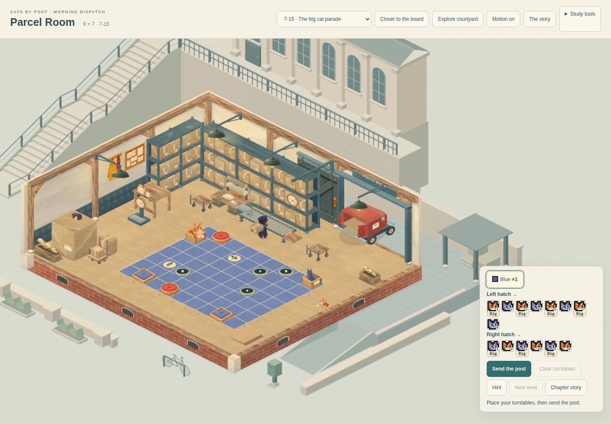
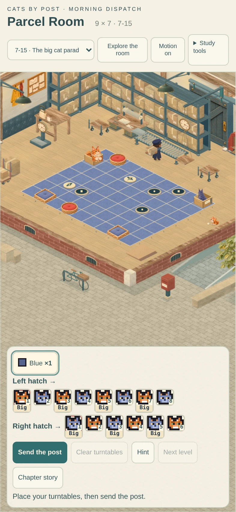
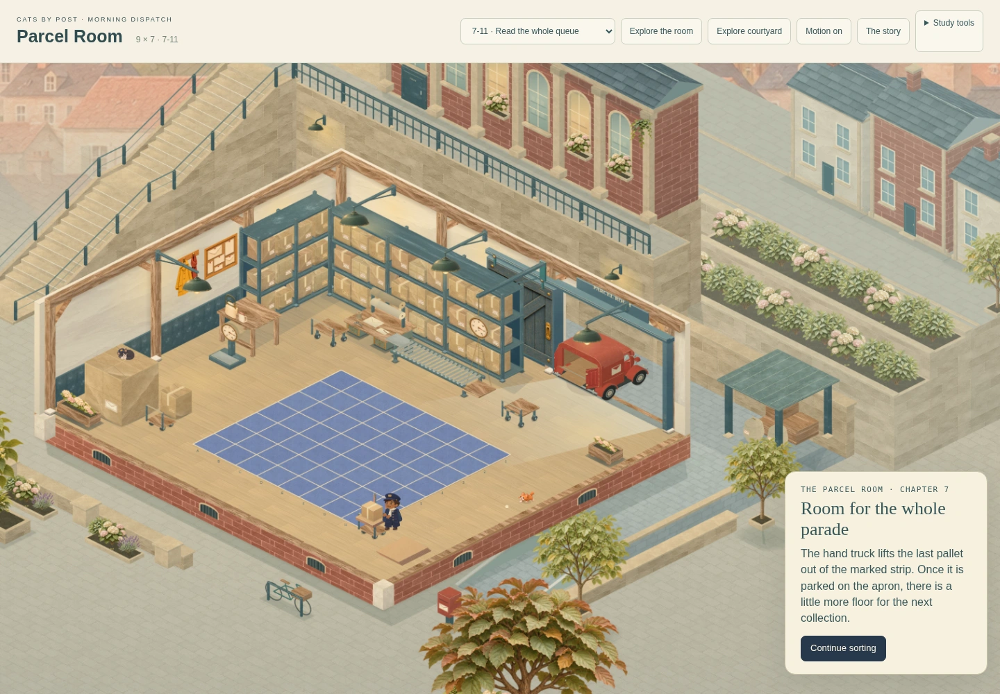

CATS BY POST · MORNING DISPATCH
The parcel's working journey.
A more finished uniform, clearer hands and a wrapped parcel that carries its twine from the bench to dispatch. The scale responds when it is weighed; the trolleys and wrapping tools have finer fittings.

Corrected · Pushing the dispatch trolley. Same camera and original postal clock.
The worker keeps the original face, route and delivery timing. Paper fibres, collar, pockets, seams, shaped sleeves and smaller grip poses add detail. Hands reaching behind the body now pass behind the coat. The parcel stays on its existing support surfaces throughout.
Follow the work
These are actual frames from the playable study. Use the buttons to inspect the wrapping, weighing, trolley and loading poses; the live room contains the full movement.

Frame 948 · At the wrapping bench.
Every board still has room

7 × 6 · First delivery
8 × 6 · First expansion
8 × 7 · Second expansion
9 × 7 · Final deliveryPhone and chapter presentations

Portrait phone · playable maximum
Original supported growth presentationReview evidence: grips, wrapping and weighing · all fifteen deliveries and chapters · browser timing comparison. Timing figures describe this software browser; physical-device performance remains for integration review.